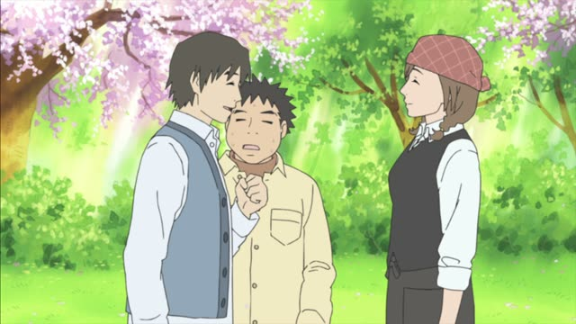
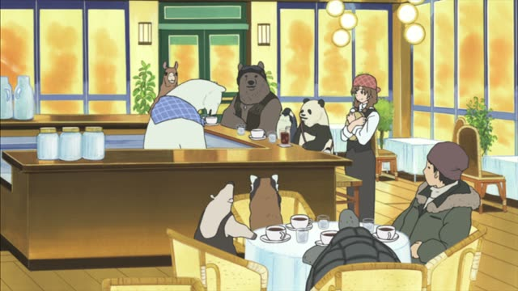
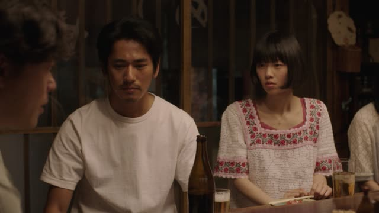
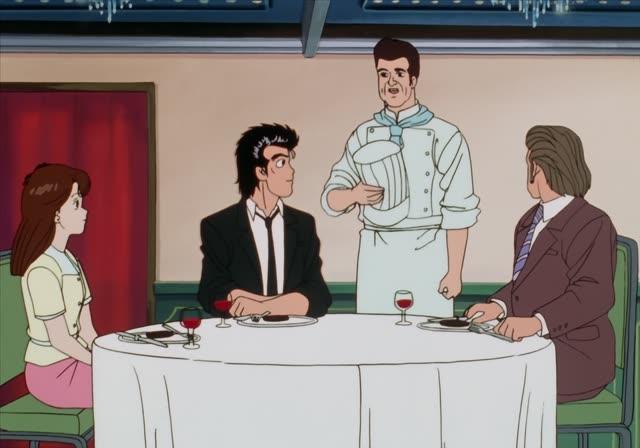

～ようにする
| Polite | ～ようにします・～ようにしています |
|---|---|
| Casual | ～ようにする・～ようにしてる |
Same meaning: "make sure to, make a habit of". Only the politeness changes.

Shirokuma Cafe · Episode 50
これからは、ちょくちょく来るようにしますよ。
"From now on, I'll make a point of coming by often."
～ようにする means "make sure to, try to make it happen": you make an effort. Plain verb + ようにする: 来るようにする. Negative: 言わないようにする, "make sure not to".
On this card, a customer promises Shirokuma he'll visit more. ようにします: he'll make it a habit. ます makes it polite.
ようにしている = it's already a habit: 毎日歩くようにしている.
Death Note · Episode 14
他の女の子ともたくさん会うようにする。
"I'll make sure to see lots of other girls too."
On this card, Light explains his cover to Misa: meeting many girls so meeting her doesn't stand out. ようにする: on purpose.
Quick Examples
Your doctor gives advice.
毎日歩くようにしてください。
"Please make sure to walk every day."
PoliteYour friend asks about your diet.
夜は食べないようにしてる。
"I make sure not to eat at night."
Negative + ようにする.
CasualApologizing at work.
次から遅れないようにします。
"I'll make sure not to be late from now on."
PoliteStudying Japanese.
毎日アニメを見るようにしてるよ。
"I make a point of watching anime every day."
CasualWith and without
毎日歩く。
"I walk every day."
毎日歩くようにしている。
"I make a point of walking every day." It takes effort.
Examples from Media

Shirokuma Cafe · Episode 43
もうダジャレは言わないようにします。
"I'll make sure not to make puns anymore."
Quartet · Episode 6
僕も早く帰ってこれるようにします。
"I'll try to get home early too."

Midnight Diner: Tokyo Stories · Season 2, Episode 8
兄貴のこと、ずっと考えないようにしてました。
"I'd always tried not to think about my brother."
Quartet · Episode 8
僕は女性を好きにならないようにしてるんで。
"I make sure not to fall for women."

Oishinbo · Episode 34
ワサビをおろすようにしたの。
"I made it a rule to grate the wasabi fresh."
Each time she makes sushi.
Brush Up Life · Episode 9
考えないようにしよう。
"I'll try not to think about it."
Kekkon Dekinai Otoko · Episode 4
できるだけ人に会うようにするとか
"Like making a point of seeing people as much as possible"
1 Litre of Tears · Episode 5
お手洗いに行かないようにしようと思って
"I was trying not to go to the toilet"
So she drank less water.